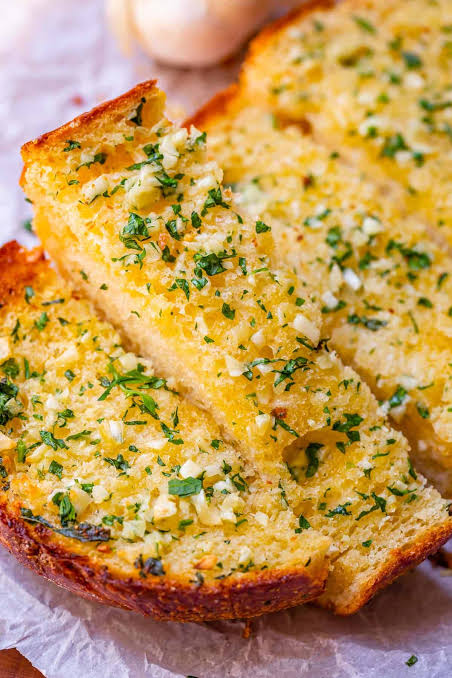

Garlic Bread

Description
Quick and delicious garlic bread recipe for you and your family to enjoy.
Ingredients
- Bread of your choice
- 200g Butters
- 5 Cloves of garlic
- 4 Tablespoons of parsley
- 1/2 cups of parmesan
- Salt and Pepper
Instructions
- Put the butter into a bowl
- Mince and add the garlic to the bowl
- Add the parsLey
- Mix until smooth then spread the garlic butter onto the bread
- Cook on an oven or preheated air fryer for 5 minutes at 180 degrees Celsius
- When there are 2 minutes left, add the parmesan
Home